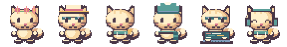

More detail. Clearer gestures. Native 48 × 48 pixel art at 2× scale, with a planted body, articulated head, and distinct activity poses.
Spring blossoms, a summer hat, an autumn hoodie, a winter knit, focused work, and music.
